この資料では、Flutterを用いてシンプルなToDoアプリを作ります。プログラミング初心者でも理解しやすいように作ってみました。Flutterのアプリ作りの雰囲気がわかると思います。
対象
- プログラミング入門者
使用技術・サービス
- Flutter 2.2.0
- DartPad

概要
- Google が開発しているアプリの作成環境
- 2018 年 12 月 4 日に発表
- 一つのプロジェクトファイルで Android、iOS、Web、Windows、MacOS、Linux アプリを作成可能
- めっちゃ簡単
ツール
各自の PC に Flutter の開発環境を構築してもいいですが...
- 大量のファイルをダウンロードする必要がある
- 環境変数の設定など、様々な設定をする必要がある
- 筆者のそこそこスペックの PC と光回線を使っても 30 分くらいかかる
ということで、Web 上で動くDartPadを利用したほうが楽ちんなのです。
最初に
- Null Safety を解除する
- 下のバーにボタンがあるので解除してください
- Null の扱いを記述するのがややこしいのと、今は必要ない知識だからです
- 基礎になるコードをコピー
- 以下のコードをコピーしてください。
import 'package:flutter/material.dart';
void main() {
runApp(MyApp());
}
class MyApp extends StatelessWidget {
@override
Widget build(BuildContext context) {
return MaterialApp(
debugShowCheckedModeBanner: false,
theme: ThemeData(primarySwatch: Colors.blue),
home: MyHomePage(),
);
}
}
class MyHomePage extends StatefulWidget {
@override
_MyHomePageState createState() => _MyHomePageState();
}
class _MyHomePageState extends State<MyHomePage> {
@override
Widget build(BuildContext context) {
return Scaffold();
}
}
完成モデルを先にGIF画像で紹介します。
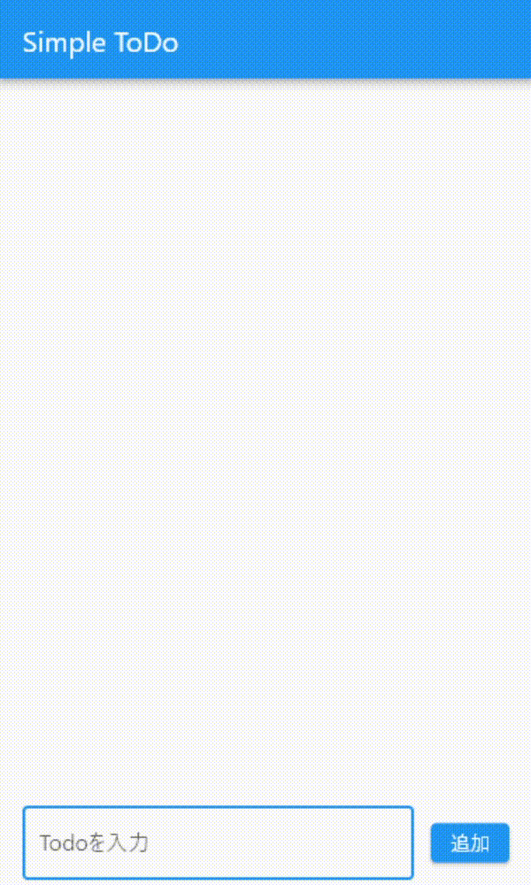
UIと機能
完成モデルを見て、必要そうなUIと機能を切り分けます。
UI
- 画面上のバー
- 追加したToDoを描画する領域
- ToDoの中身を表示するカード
- 画面下のテキストボックスと追加ボタン
機能
- テキストボックスに書かれた内容を、ボタンが押されたときに追加する
- ToDoを描画する仕組み
- Doneボタンを押したときにToDo削除
- 削除ボタンを押したときにダイアログ表示
- 削除ボタンを押したときにToDo削除
- 空テキストのときに追加できないようにする
だいたいアプリケーションを作るときは、UIから作っていくのでそれにならいます。次からUIを作っていきます。
UI作りの考え方
Flutter の場合、Widgetと呼ばれるUIパーツを組み合わせて画面を作っていきます。
デザインの種類
デザインにはたくさんの種類があります。モバイルアプリでは以下の２つが有名です。結局AndroidっぽいかiOSっぽいかになります。
- マテリアル・デザイン
- Googleが推しているデザイン。Flutterはこれです。
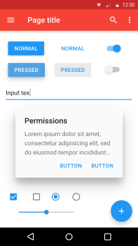
- Googleが推しているデザイン。Flutterはこれです。
- クパチーノ・デザイン
- Appleが推しているデザイン。Apple本社がクパチーノにあります。

- Appleが推しているデザイン。Apple本社がクパチーノにあります。
Runしてみる
基礎になるコードを貼り付けたらRunボタンを押してみてください。
真っ白の画面が表示されるはずです。ここから画面を作っていきます。 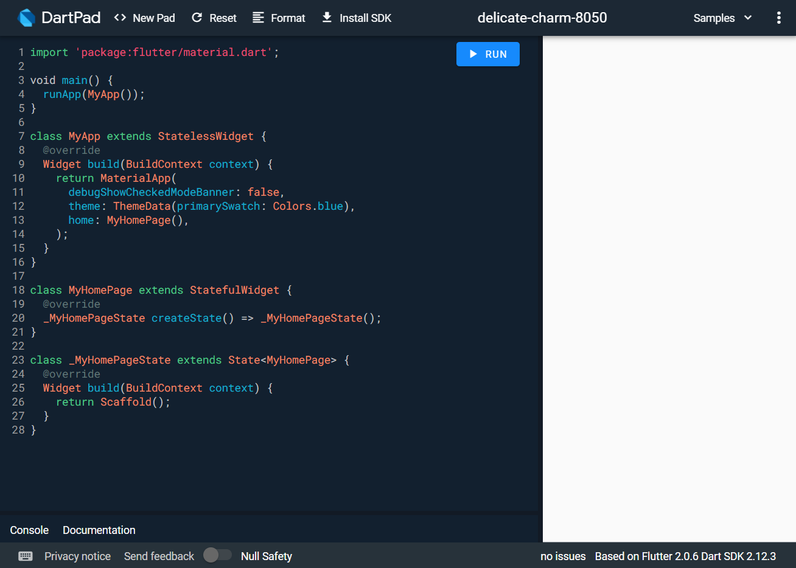
この白い画面はScaffold()Widgetが作り出しています。Scaffold()Widgetはすべての土台となるWidgetです。
Scaffold()Widgetはたくさんのプロパティを持っていますが、今回使うのはappBarとbodyです。appBarになにかWidgetを持たせるとそこに表示されますし、bodyも同じです。２つの領域が作られるような感じです。
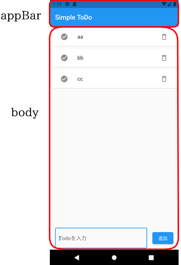
appBarにAppBar()Widgetを持たせましょう。これで画面上部にバーが表示されます。
return Scaffold(
appBar: AppBar(
title: Text('Simple ToDo'),
),
);
AppBar()Widgetにはtitleプロパティがあり、そこにText()Widgetを置いています。AppBar()Widgetにはtitleという領域があるということです。Text()Widgetの()の中に''付きで文字を置くと、その文字が画面上に表示されます。
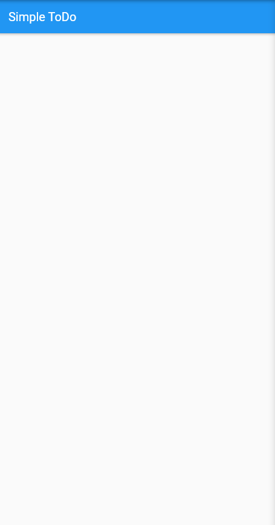
次に下のテキストボックスを作りたいのですが、下の画像のように、ToDo要素とテキストボックスが縦に並んでいます。Flutterの場合、要素を縦に並べるWidgetとして、Column()Widgetがあります。
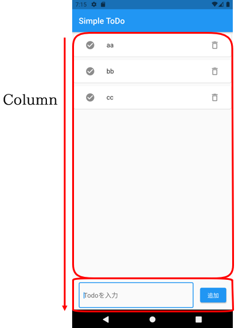
Column()Widgetを設置します。Scaffold()Widgetのbody領域に置きます。
return Scaffold(
appBar: AppBar(
title: Text('Simple ToDo'),
),
body: Column(
mainAxisAlignment: MainAxisAlignment.start,
children: [
],
),
);
mainAxisAlignment: MainAxisAlignment.start,とは、要素をどういう感じに並べるかの設定です。この場合、上から単純に並べるものです。他には、要素を等間隔に並べたり、中央に集中させたりできます。children: [],の中に並べたい要素を列挙していきます。
下記のコードを書きましょう。
children: [
ListTile(
title: Form(
child: TextFormField(
),
),
),
],
ListTile()
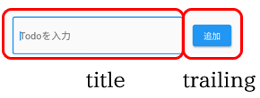
ListTile()Widgetも画面を分割するWidgetです。
Form()・TextFormField()
Form()WidgetはTextFormField()Widgetを使うための前提Widgetです。TextFormField()Widgetが実際に画面に表示されるテキストボックスです。
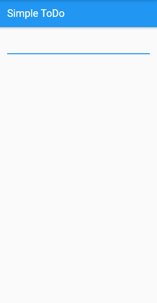
InputDecoration()・OutlineInputBorder()
テクストボックスは見た目や情報を変えることができます。
下記のようなWidgetを置いてみましょう。
children: [
ListTile(
title: Form(
child: TextFormField(
decoration: InputDecoration(
border: OutlineInputBorder(), hintText: 'Todoを入力'),
),
),
),
],
TextFormField()のdecorationプロパティにInputDecoration()Widgetを置くと装飾ができるようになります。borderプロパティにOutlineInputBorder()Widgetを置くと、テクストボックスが縁取られたデザインになります。hintTextプロパティはテキストボックス内に何を書くべきかのヒント文章を表示できます。
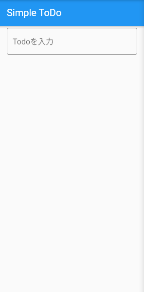
ElevatedButton()
テキストボックスの右にボタンを置きましょう。ListTile()WidgetのtrailingプロパティにボタンのWidgetを置けば、テクストボックスの右にボタンを置けそうです。
trailing: ElevatedButton(
onPressed: () {
},
child: Text('追加')
),
ボタンにはいくつか種類がありますが、ElevatedButton()が見やすいと思います。childプロパティにText()Widgetでボタン内に文字を表示できます。onPressedプロパティはボタンが押されたときにどんな処理をするのかを記述します。

さあ、ここまで画面にUI要素をただ置いていく作業でした。ここからプログラミングらしいことをしてみましょう。
実装する機能
以下の機能を実装します
- テキストボックス内に書かれた文字を配列に格納
考え方
実装する機能を具体的に言葉で説明すると、
「ボタンが押されたときに、テキストボックス内に書かれた文字を認識して、どこかに保存する」です。つまり、
- 現状だとボタンとテキストボックスは赤の他人状態です。何も関係性はありません。ボタンを押すとテキストボックス内を参照させる必要があります。
- 「どこか」に当てはまる場所は、実際のアプリであればサーバーにあたります。様々なデータを保存しておく場所です。ただし、ちょっと大変なので今回は配列に保存してみましょう。
配列とは
- 配列の前に、変数という概念を知りましょう。変数とは、ずばり「箱」です。文字列、数字、命令など、なんでも入ります。使い方は、
- 箱を用意（名前をつける）して、なにか入れる
- 箱の名前をコード上に書く これだけです。使いたいときにはこの名前をコード上に書くと、コンピューターが箱の中身を展開して使ってくれます。
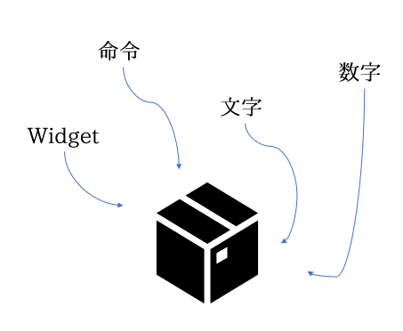
- 次に配列とは、「箱の中に仕切りがついている箱」です。イメージはマンションに近いと思います。
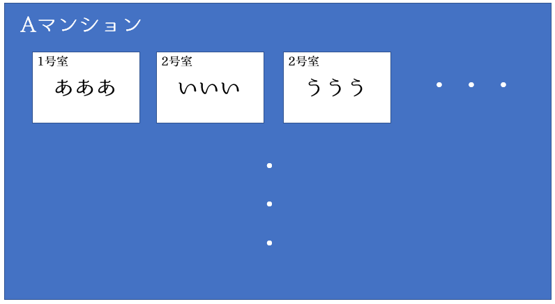
Aマンションの１号室には「あああ」という文字列が入っています。コード上で「Aマンションの１号室！」と呼ぶと、展開されて「あああ」が取り出されます。この「Aマンション」にあたるのが配列名です。
配列とTextEditingController()
class _MyHomePageState extends State<MyHomePage> {
var todos = [];
var textbox = TextEditingController();
@override
一気に書きましたが、todosとtextboxという変数を用意しました。[]が配列を表します。つまり、todosという変数の中身は配列だよということです。同じようにtextboxという変数にはTextEditingController()というWidgetを入れました。TextEditingController()はテキストボックス内に何か書くと、文字だけでなく様々な情報が入るWidgetです。
ボタンとテキストボックスを連携
child: TextFormField(
decoration: InputDecoration(
border: OutlineInputBorder(),
hintText: 'Todoを入力'),
controller: textbox,
),
TextFormField()のcontrollerに用意したtextboxを持たせます。これでテキストボックスに書かれた文字などの情報がtextboxに入っているTextEditingController()に入ります。
trailing: ElevatedButton(
onPressed: () {
setState(() {
todos.add(textbox.text);
textbox.clear();
});
},
child: Text('追加')
),
配列に要素を追加するには、配列名.add(追加したいもの)という書き方をします。今回はtodosにaddします。追加したいものはtextbox.textになります。.textによって、TextEditingController()に入っている情報のテキスト要素を取り出しています。textbox.clear()はaddしたあとにテキストボックス内をリセットするということです。addしたのにテキストボックス内に文字が残っていたら嫌です。
todos.add(textbox.text);
textbox.clear();
print(todos);
print(todos)によって、todosの中身を覗くことができます。consoleという手元で確認する用のパネルに表示します。
テキストボックス内にテキストを入力して、追加ボタンを押したときにconsoleに文字が表示されたらOK！
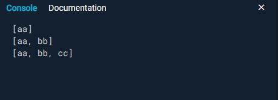
いよいよ追加したToDoを画面に表示して見えるようにします。どうするかというと、配列の中身を画面に表示するWidgetを用います。
Expanded()・ListView.builder()
ToDoをテキストボックスの上に表示させます。そのためには、Column()の中のchildren[]の中に、テキストボックスの上にWidgetを配置します。
body: Column(
mainAxisAlignment: MainAxisAlignment.start,
children: [
Expanded(
child: ListView.builder(
itemCount: ,
itemBuilder: (context, index) {
return;
}
)
),
Expanded()Widgetは便利なWidgetで、子要素を縦幅いっぱいまで自動的に広げるWidgetです。普通縦幅を自分で設定しなければダメなのですが、これは自動的に広げてくれます。
ListView.builder()は指定した配列やデータベースから、要素を一個づつ表示させるWidgetです。itemCountは要素を全部で何個表示するかです。今回はtodos配列の中身の数だけ表示させるので、こうします。
itemCount: todos.length,
配列の中身の要素はitemBuilderのreturnの次に書かれた形で表示します。一つ一つの要素の見た目をreturnの次で決めるということです。
先程のreturnの続きを作っていきましょう。非常に便利なCard()Widgetを使います。いい感じに影がついていて見やすいです。
itemBuilder: (context, index) {
return Card(
child: Text(todos[index])
);
}
Card()の中身はText()でtodos[index]としました。配列の解説のところで、「配列名の何番目！」と呼ぶと、その値が取り出されると言いました。なので、todos[0]とするとtodosの1番目が取り出され、todos[1]とするとtodosの2番目が取り出されます。
今回は、index番目としました。indexとは、itemBuilderで使われているindexという単語です。itemBuilderは配列の中身を1個づつすべてチェックしていくメソッドです。1個めをチェックしているときはindexは0です。2個めをチェックしているときはindexは1です。このように、indexは順番に数字が＋１されていきます。これを利用しています。
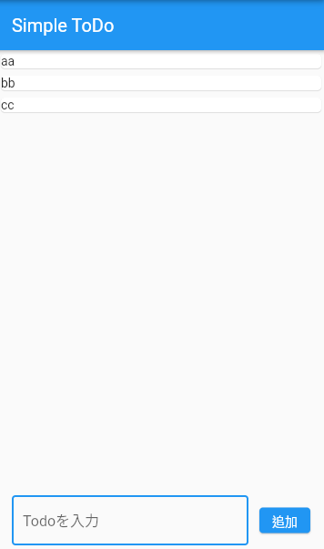
このままだと見づらい上に、いろいろボタンを置きたいので、ListTile()をまた使いましょう。（ほんと便利です）
return Card(
child: ListTile(
title: Text(todos[index])
)
);
とりあえず、titleにText()を置きました。いい感じに余白が空いて見やすくなったと思います。
IconButton()
ToDoが完了したときの完了ボタン、ToDoを削除するときの削除ボタンをアイコンでやりたいと思います。そこで使うのがIconButton()Widgetです。
child: ListTile(
leading: IconButton(
icon: Icon(Icons.check_circle),
onPressed: () {
}
),
title: Text(todos[index]),
trailing: IconButton(
icon: Icon(Icons.delete_outline),
onPressed: () {
}
),
)
ListTile()のleading（左）とtrailing（右）にアイコンを置きました。IconButton()のiconで何のアイコンを置くのか、onPressedで押されたときの処理を決めます。
Fluterがあらかじめ用意してくれているアイコンを用いました。よくみるようなアイコンかと思います。ちなみに、Flutterのアイコンは十分以上にたくさんあります。ありすぎて、見ているだけで楽しいです。Flutterのアイコンはこちら
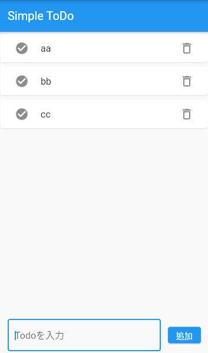
IconButton()のonPressedの処理を何も書いていないので、押しても何も起こりません。タスク完了のチェックマークとゴミ箱ボタンを押したときの処理を書いてみましょう。
タスクが完了した時、または削除する時は配列内からその要素を消してあげれば画面に表示されなくなります。
removeAt()
onPressed: () {
setState(() {
todos.removeAt(index);
});
}
removeAt()はWidgetではなく、メソッドです。配列内の特定番目の要素を削除するメソッドです。removeAt( 0 )とすると、配列内の１番目が削除されます。今回はindex番目です。
これでも一応動作しますが、タスク完了とタスク削除の区別がつきにくいです。なので、削除するときは「削除しますか？」というダイアログを表示させてみます。
AlertDialog()
ダイアログにも種類がありますが、AlertDialog()を使います。Flutterでダイアログを表示させるには一旦showDialog()というメソッドをかます必要があります。
onPressed: () {
showDialog(
context: context,
builder: (_) {
return AlertDialog(
);
}
);
}
AlertDialog()の中身を書いていきます。
return AlertDialog(
title: Text('削除しますか？'),
actions: [
TextButton(
child: Text('削除'),
onPressed: () {
setState(() {
todos.removeAt(index);
});
Navigator.pop(context);
},
),
TextButton(
child: Text('キャンセル'),
onPressed: () {
Navigator.pop(context);
},
),
],
);
titleはダイアログのメインテキストです。actionsは下部に表示されるボタン類を置く場所です。削除ボタンとキャンセルボタンを用意しました。つかうWidgetはTextButton()です。削除する場合はonPressed内にremoveAt(index)で削除するメソッドを置いています。Navigator.pop(context)というのは、画面を一つ前の状態に戻す効果があります。このハンズオンでは実装しませんが、画面遷移をしたときに前の画面に戻すときもこれを使います。これを書かない場合、ボタンを押してもずっとダイアログが表示されたままになります。
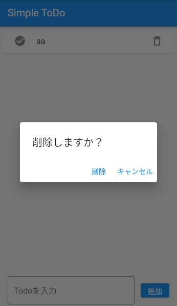
気づいている人もいるかも知れませんが、テキストボックスを空白の状態で追加ボタンを押すと、空テキストで配列に追加されてしまいます。このようなことを防ぐために、テキストボックスの中身が不適切の場合は警告を出すことができます。それがバリデートというものです。
流れ
少し複雑なので、システムの流れを始めに説明します。
- 追加ボタンを押したときにバリデートが走る
- バリデートの結果、問題なしなら配列に追加。問題ありなら３へ。
- 内容が間違っていると警告を出す。
keyが必要
テキストボックス内の状態を確認する一意のkeyというものがバリデートには必要です。GlobalKey<FormState>()というkeyを変数で用意して、それをForm()にセットします。
var textbox = TextEditingController();
var todos = [];
var formKey = GlobalKey<FormState>();
ListTile(
title: Form(
key: formKey,
child: TextFormField(
まず、validateの処理を書いてみましょう。
child: TextFormField(
decoration: InputDecoration(
border: OutlineInputBorder(), hintText: 'Todoを入力'),
controller: textbox,
validator: (value) {
if (value.isEmpty) {
return 'テキストを入力してください';
}
return null;
},
),
if () {}はそのまま「もし」という意味です。()中身が真なら、{}の中の処理をするということになります。この場合、テキストボックス内が空っぽなら、「テキストを入力してください」という文字が画面に表示されることになります。空っぽでないならnullで何もしないということです。
次に、この処理を追加ボタンを押したときに起動させます。
trailing: ElevatedButton(
onPressed: () {
setState(() {
if (formKey.currentState.validate()) {
todos.add(textbox.text);
textbox.clear();
}
});
},
child: Text('追加')
)
formKey.currentState.validate()の部分で、上で用意したvalidateの処理が実行されます。そして、問題がなければ配列に追加する処理がなされます。問題があれば、上で設定した警告文が表示されます。

これでこのSimple Todoアプリで必要なすべての機能を実装することができました！！
最後にFlutterっぽいアプリは最近良く目にするようになってきているという話をして終わりたいと思います。
最初に話したように、Flutterはとても新しい技術です。ですが、かなり開発元のGoogleさんはやる気があってコミュニティも活発なので、Flutterのアプリは多くなってきています。
調べてもいまいちヒットしなかったので、ただの私の予想ですが、多分YoutubeアプリはFlutterだと思っています。
この画像のように、下のアイコンとは動画タイトルとが右のボタンとか。これって多分ListTile()でつくっているように思いませんか？
ただの一例ですが、Flutterを触っていると、「このアプリFlutter臭い！」と感じることが多々あります。これからこのような経験が増えていくと思っています。
dloppのFlutterハンズオンはこれにて以上となります。ありがとうございました～！